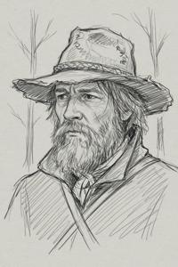
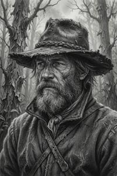

Бранко Дундулич - ЧЕРНОВИК
{kind=link}

Бранко Дундулич (згур. Branko Dundulicz, дегл. Branko Dundulič, глаг. ⰁⰓⰀⰐⰍⰑ ⰄⰖⰐⰄⰖⰎⰊⰝ; около 1830 - после 1887) - верхнепаннонский поэт. Общепризнанно считается величайшим национальным поэтом, создателем литературного паннонского языка и поэтики.
Биография
Биография Дундулича загадочна. Никто никогда не встречался с ним физически. Поэт общался с миром только через письма. Адресом служил почтовый ящик до востребования на центральном почтамте Вроновицы. Письма привозил и забирал глухонемой слуга на вороном коне, подтверждавший свою личность сломанной печатью: одна половина была у него, другая хранилась на почтамте. В те времена это был распространённый способ подтверждения личности; имя слуги так и осталось неизвестным. Когда любопытствующие пытались следовать за слугой, тот грозил им оружием, и несколько инцидентов доказали, что угрозы не пусты.
Итак, Дундулича так и не удалось найти, поэтому о нём известно только то, что он сам сообщал в письмах. По его словам, он был по происхождению этническим хорватом из граничар, поселившихся на паннонской военной границе в начале XVIII века. Его предки якобы служили в полку деглянских гайдуков, и сам он считал себя деглянином. Дундулич объяснял свой таинственный образ жизни в романтически-руссоистском ключе: он уединённо живёт в горах Нехожи Врехи, скитается по лесам, добывая пропитание охотой, и избегает городов с их толпами и суетой, чтобы не смущать душу и не грязнить родник вдохновения, проистекающий от возвышенного созерцания Матери-Природы. Он называл себя последним в роду, отрицая существование каких-либо родственников, и категорически отклонял любые предложения о личной встрече. В ответ на многолетние просьбы поклонников о портрете он в 1877 прислал грубый карандашный набросок - единственное известное изображение, основу для бесчисленных портретов, рождённых воображением поколений художников. Его переписка началась в 1849 году и оборвалась после 1887, который считается годом его смерти.
Творчество
(...)
Гипотезы о личности
{kind=link}

В паннонском литературоведении дундуличевский вопрос - всё равно что шекспировский вопрос в английском. Тайна его личности многим не даёт покоя, а официальная история лесного отшельника не удовлетворяет почти никого. Предполагается, что "Бранко Дундулич" - псевдоним, и хорватское происхождение было выбрано именно для того, чтобы нельзя было связать его ни с каким паннонским семейством.
Ещё при жизни Дундулича многие верили, что он и есть тот самый, якобы глухонемой слуга, через которого велась переписка. Сторонником этой теории был Сандор Люх, попытавшийся разоблачить слугу в 1880 году. Он писал:
Устав от его притворства, я крикнул вслед: "Любезный, передай своему барину, что тот исписался вконец, и в последней его балладе лишь четыре стиха хороши, да и те ворованные!" Тут мнимый этот глухонемой обернулся в седле, и глаза его блеснули такой яростью, что стёрли малейшие следы сомнений.
Но личность слуги также неизвестна, что оставляет вопрос открытым. Судя по стихам и письмам, Дундулич был образованным человеком и знал классические языки, а также церковнославянский. На этом основании некоторые считают его священником, вынужденным скрывать свою литературную деятельность, якобы несовместимую с саном. Историки нашли несколько кандидатур - приходские священники из горных районов с подходящими годами жизни - но ни для кого из них надежных доказательств нет.
Одна из самых популярных теорий отождествляет Дундулича с бароном Петером Зорзой (1828-1887). Годы жизни подходят идеально. В молодости Петер, второй сын главы дома Зорза, готовился стать священником, учился в Академии наук, вращался в одном кругу с будущими отцами Славянского Возрождения и разделял их интересы. После безвременной смерти старшего брата Андраша он стал наследником, а потом главой дома, и остаток жизни почти безвылазно провёл в фамильном замке Зоржин в Нехожих Врехах. Литературные и прочие интеллектуальные занятия не поощрялись в роду Зорза, поэтому Петер имел причины скрывать своё писательство. Однако до нас дошли собственноручные записи Петера, и почерк не совпадает.
Другая, ещё более романтичная теория, считает автором стихов Дундулича Илону Эстерхази (1830-1888), урождённую Брегови, ученицу Эньо Жлутоводого и адресат его любовной лирики. Годы жизни подходят, близость к литературному кругу раннего Славянского Возрождения подтверждена, но Илона жила в Венгрии и никогда не бывала в горах Верхней Паннонии, которые Дундулич всю жизнь воспевал и прекрасно знал.
Категории: Черновики, Авторы, Эпоха Габсбургов, Персоналии, Славянское Возрождение